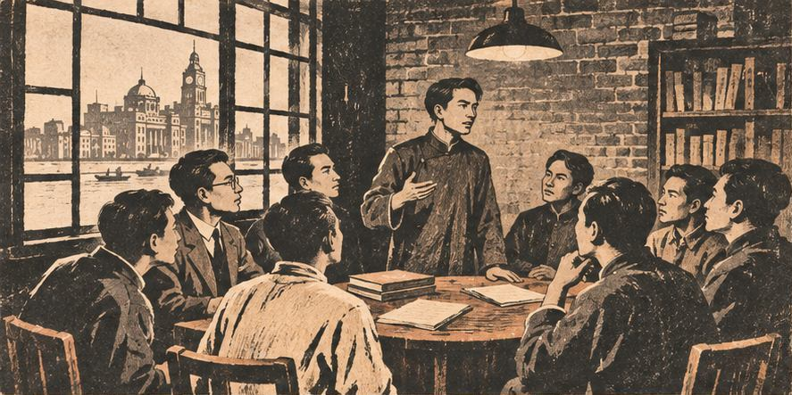
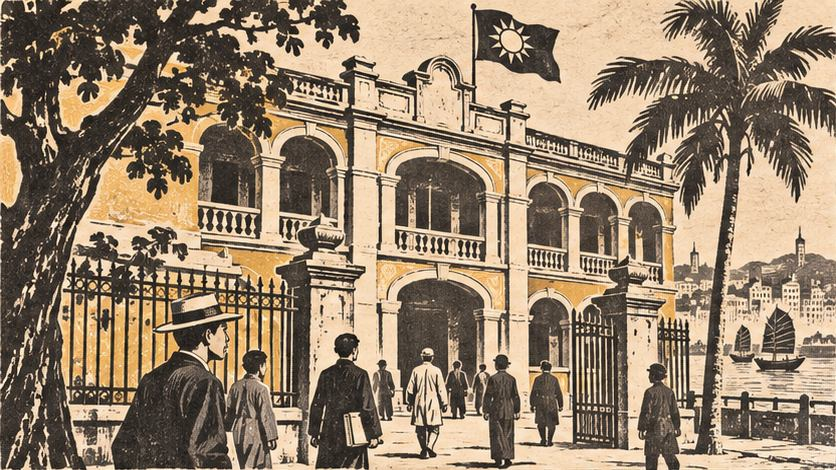
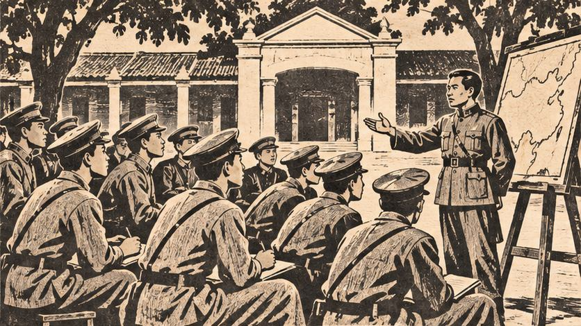
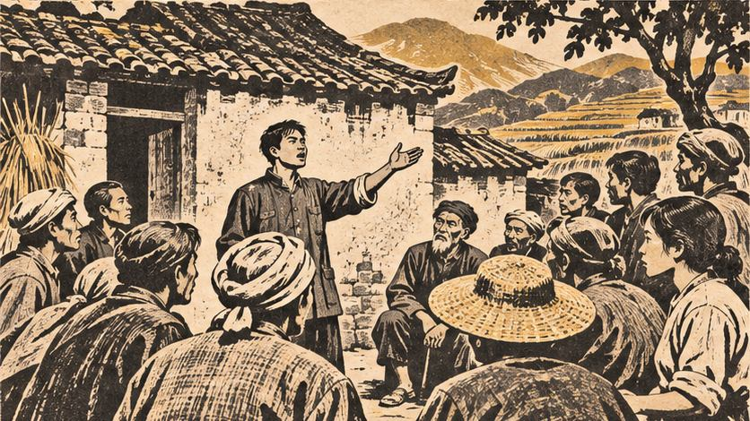
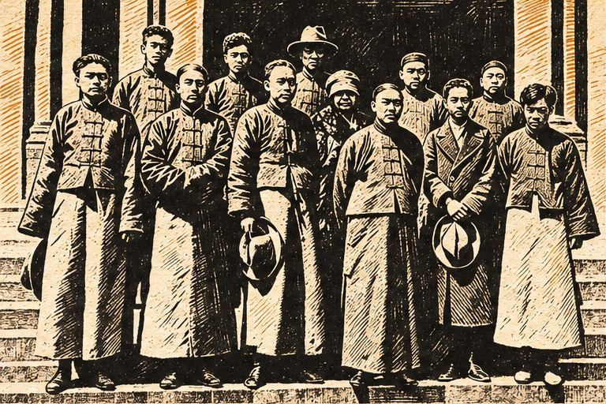
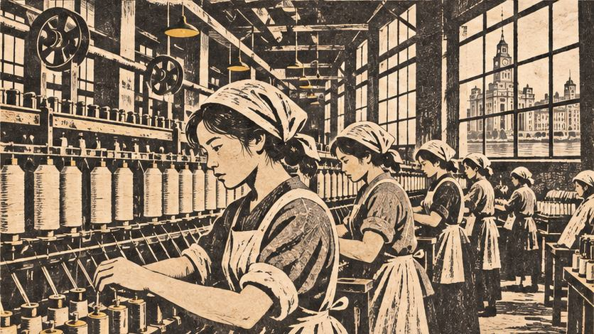
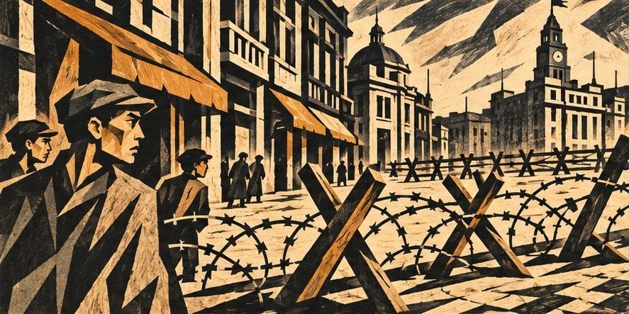

HIST 270 · Chapter 25 · Block 1
1921–1927
Why did two rival parties work together, and what pulled them apart?

Modern Chinese woodcut reconstruction1912 onward
Concept · Warlord
A warlord is a military commander who controls territory through a personal army.
After 1916, rival commanders governed much of China.
Concept · Nationalists

1921
Concept · Marxism
Marxism explains political conflict partly through who owns productive property and who works for them.
The early CCP looked to organized workers as a force for revolution.
Concept · Comintern
The Communist International, or Comintern, was based in Moscow.
It sent advisers abroad and pressed the small CCP to cooperate with the Nationalists.
Concept · First United Front
From 1924, Communists joined the Nationalist Party as individuals and kept their own party.
The alliance pursued national reunification and brought Soviet aid and new organizers into the Nationalist movement.
1924–1926

1926 · Northern Expedition
Concept · Union and peasant association

March 1927 · Hunan
March 1927 · Mao’s Hunan report
“A revolution is not a dinner party.”Mao Zedong, Hunan report, March 1927
Mao argued that overthrowing entrenched power involved conflict.
March 1927 · Shanghai

Spring 1927

Concept · Political purge
A purge removes people from an institution or movement on political grounds.
In Shanghai, political exclusion took the form of arrests, killings, and attacks on unions.
April 12, 1927 · Shanghai

July 1927 · Wuhan
1927 · Synthesis
Quiz · Ten questions
Answer ten multiple-choice questions on The First United Front Breaks Apart. Click one answer per question, then click Check Your Work to see the correct answers and the slide that teaches each one. You can change answers any time.
Your answers save automatically. When you finish, click Download .txt and submit the file on Canvas.
Heads up: Autosave only works in this same browser on this same device. If you might switch computers or browsers, click Download .txt partway through to keep a backup.
Quiz · Questions 1–2
Quiz · Questions 3–4
Quiz · Questions 5–6
Quiz · Questions 7–8
Quiz · Questions 9–10
Finished? Click Download .txt and submit it on Canvas.